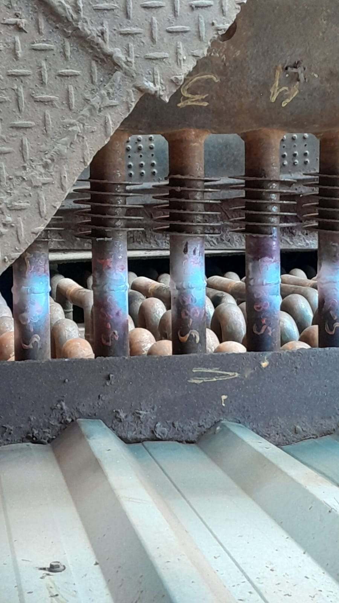
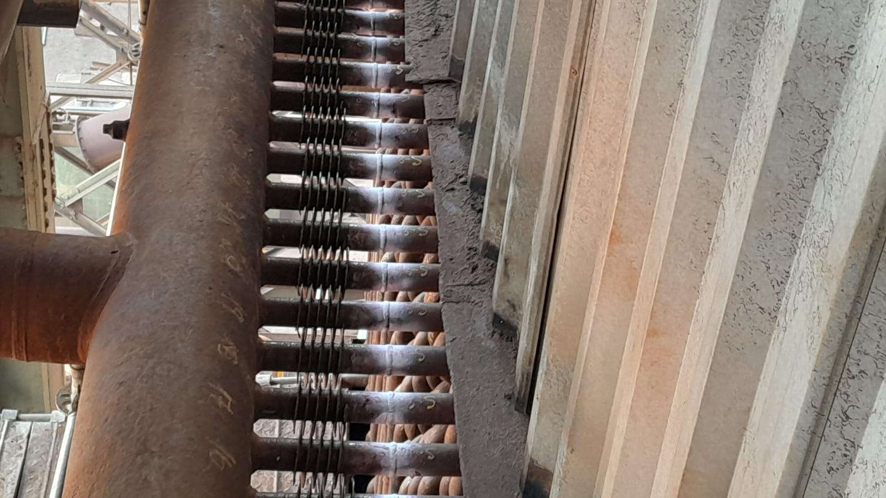
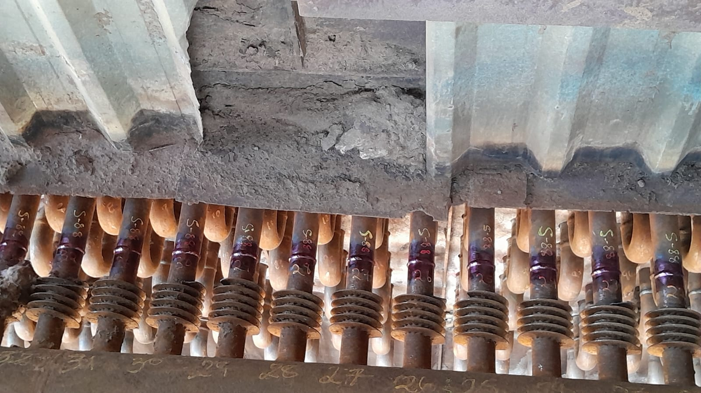
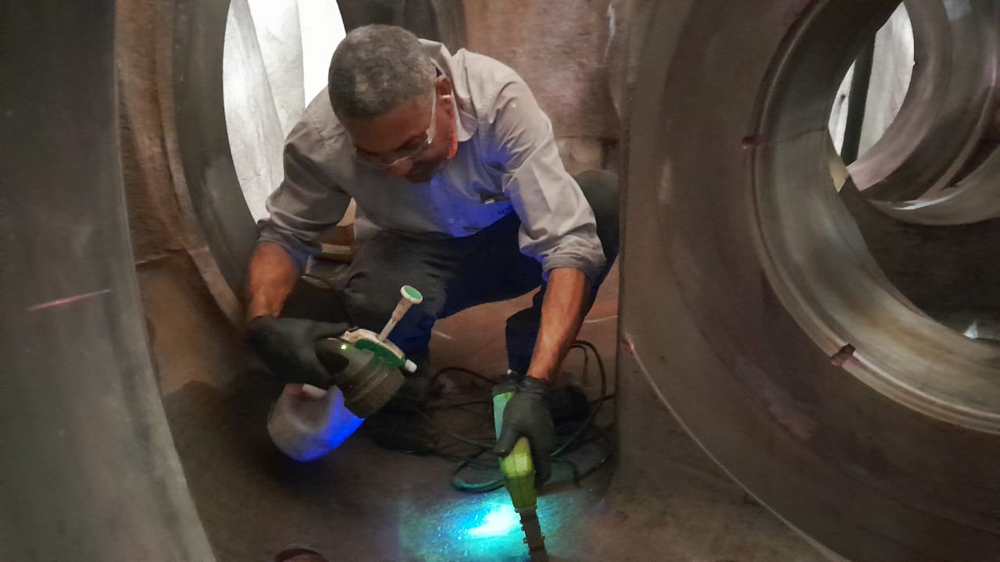
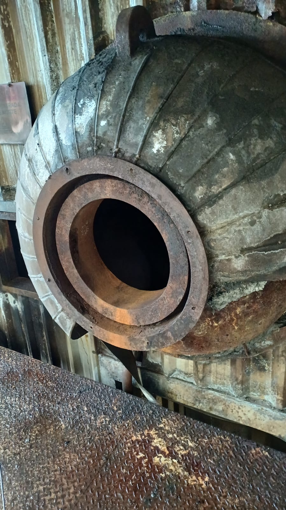
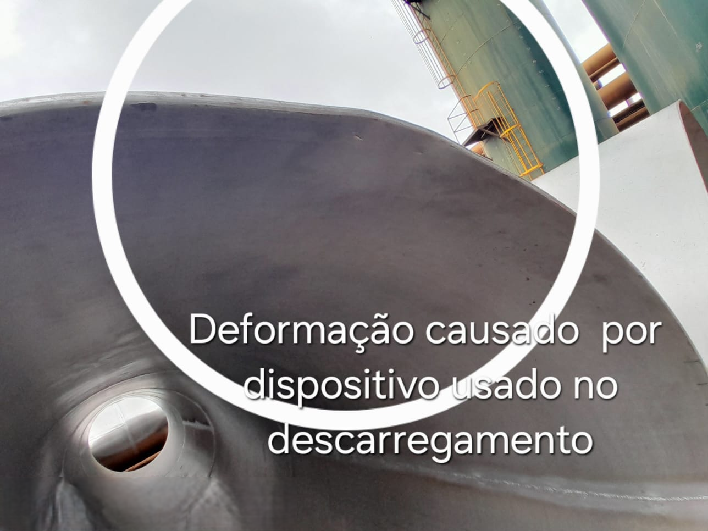
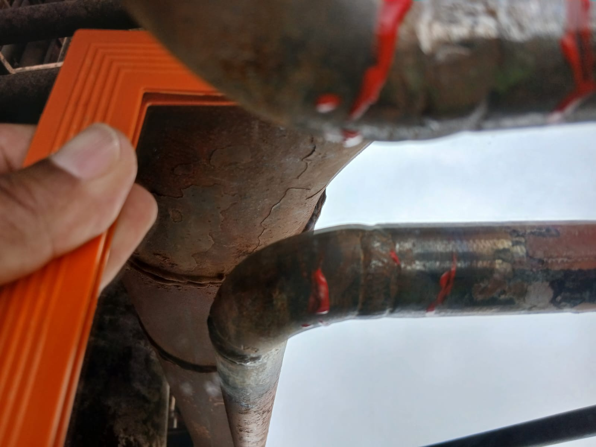
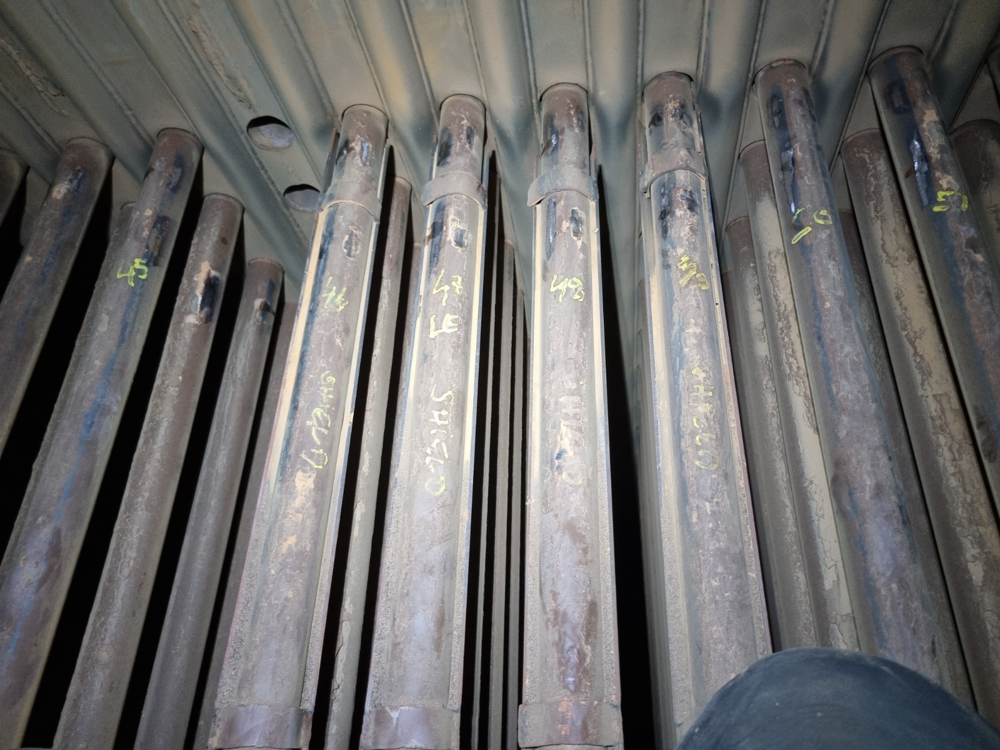
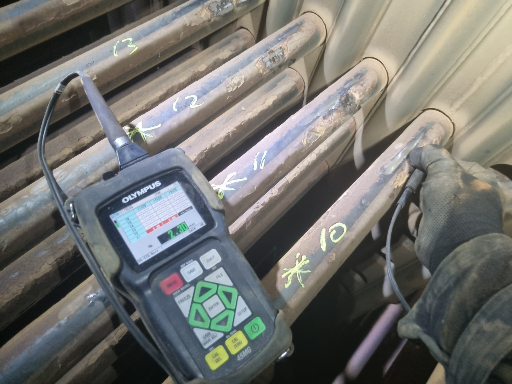

G.O Inspeções
Especialistas em Ensaios Não Destrutivos (END)
Segurança, confiabilidade e precisão técnica para inspeções industriais.
Especialistas em Ensaios Não Destrutivos (END)
Segurança, confiabilidade e precisão técnica para inspeções industriais.
A empresa G.O Inspeções é especializada em Ensaios Não Destrutivos (END), oferecendo soluções voltadas à inspeção, controle de qualidade e integridade estrutural de equipamentos e componentes industriais.
Trabalhamos com responsabilidade técnica, confiabilidade operacional e foco total em segurança, garantindo resultados precisos para os mais diversos segmentos industriais.
Inspeções Técnicas
Compromisso
Atendimento
Inspeções técnicas voltadas ao controle de qualidade industrial.
Serviços de inspeção para equipamentos e estruturas operacionais.
Avaliação estrutural e inspeção de soldas.
Controle dimensional, inspeção visual e END.
Método utilizado para identificação de descontinuidades superficiais.



Inspeção aplicada para identificação de trincas e falhas em materiais ferromagnéticos.


Avaliação técnica visual de componentes, soldas e estruturas industriais.



Controle de desgaste, corrosão e avaliação estrutural de componentes industriais.


A inspeção de dureza serve para verificar a resistência de um material à deformação, risco ou penetração, garantindo que ele tem a qualidade e o tratamento térmico adequado para uso na peça ou equipamento.


Compromisso com normas e práticas operacionais seguras.
Equipamentos modernos e inspeções realizadas com confiabilidade.
Flexibilidade operacional para atender diferentes necessidades industriais.
Documentação técnica clara, organizada e profissional.
Análise Inicial
Preparação
Inspeção
Relatório Técnico
Entrega Final
Solicite informações, orçamento ou atendimento técnico.
📞 WhatsApp: (16) 99146-1285
📧 Oseias.goinspecoes@gmail.com
📍 Ribeirão Preto - SP e região